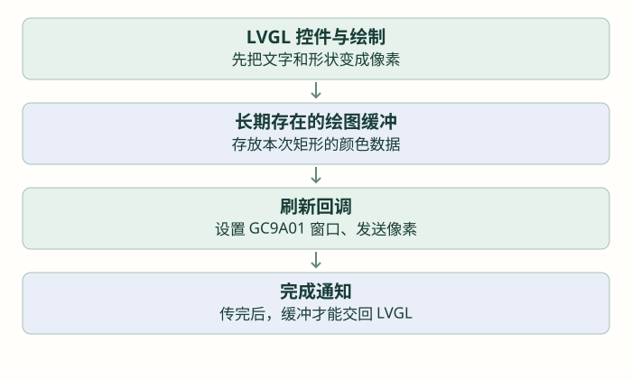

把 LVGL 接到屏幕：缓冲、刷新与时间
把已经能写像素的驱动接到 LVGL，逐项理解缓冲区、刷新回调、字节序和时间推进。
前置：完成上一篇「先驱动手表彩屏：GC9A01 与 RGB565」。各篇独立示例按说明替换，不把多份页面创建循环叠在一起。
屏幕已经能画色块，为什么还要接一个图形库？
上一篇能指定矩形、发送 RGB565。若要显示按钮、文字和设置菜单，自己计算每个字的像素、边框、位置会越来越繁琐。LVGL 接手这些绘图工作，屏幕驱动继续负责把像素送出去。
先把两份工作分开：LVGL 决定“这块区域应是什么颜色”，GC9A01 驱动决定“怎样把颜色写到这块屏”。把两者连接起来的代码叫显示端口。它不要求屏幕懂标签、按钮或页面。

仓库的链接层在 lv_port_disp.c。本篇只让这条显示通路稳定工作，还不创建复杂页面。这里按仓库 LVGL 8.3.11 讲解；网上的 v9 示例使用另一套显示接口，不能把函数名混用。
先准备一块长期存在的“画布”
LVGL 先在 RAM 中画出像素，再提交给驱动。保存这些像素的数组叫绘图缓冲区。屏幕有 240×240 个像素，但缓冲区可以小于整屏；当待绘区域放不下时，库分批处理。
先使用项目相同的十行：240×10＝2400 像素，每像素两字节，共 4800 字节。缓冲区必须在刷新期间一直存在，放在普通初始化函数的局部数组里会在函数返回后失效。
| 名字 | 类型与用途 | 本例生命周期 |
|---|---|---|
| buf1 | lv_color_t 数组；当前一个元素表示一个 16 位像素 | 文件作用域 static，持续存在 |
| draw_buf | lv_disp_draw_buf_t；登记像素缓冲区的管理结构 | 持续存在，不是像素数组本身 |
| disp_drv | lv_disp_drv_t；登记分辨率、刷新函数等 | 持续存在，供端口注册和管理 |
文件作用域 · 先声明存储，再到初始化函数中登记
static lv_color_t buf1[240 * 10];
static lv_disp_draw_buf_t draw_buf;
static lv_disp_drv_t disp_drv;lv_disp_draw_buf_init 的四个参数是管理对象地址、第一块缓冲地址、第二块缓冲地址、每块容量。容量单位是像素；只用一块时，第三个参数填 NULL。它没有返回值。
初始化函数内 · 最后填 2400，不填 4800
lv_disp_draw_buf_init(&draw_buf, buf1, NULL, 240 * 10);LVGL 画好了，怎样通知驱动来取？
库不直接知道 GPIO 和 SPI。应用提供一个函数，把它登记为刷新回调，LVGL 每准备好一批像素，就调用它。下面先认识回调的参数：
| 参数 | 类型 | 里面有什么 |
|---|---|---|
| drv | lv_disp_drv_t * | 本次对应的显示驱动描述 |
| area | const lv_area_t * | 矩形起点 x1/y1，包含式终点 x2/y2 |
| color_p | lv_color_t * | 这一批像素从哪里开始，不保证是一整屏 |
回调没有返回值。先算 w＝x2－x1＋1、h＝y2－y1＋1，再交给已经学过的 GC9A01_DrawBitmap。结束时调用 lv_disp_flush_ready(drv)，它只有驱动地址一个参数、无返回值，用来通知库这批缓冲可以复用了。
轮询端口教学片段 · 前提是传输缓冲的字节序已经匹配，不与仓库现有回调重复注册
static void lesson_flush(lv_disp_drv_t *drv,
const lv_area_t *area, lv_color_t *pixels)
{
uint16_t w = (uint16_t)(area->x2 - area->x1 + 1);
uint16_t h = (uint16_t)(area->y2 - area->y1 + 1);
GC9A01_DrawBitmap((uint16_t)area->x1, (uint16_t)area->y1,
w, h, (const uint8_t *)pixels);
lv_disp_flush_ready(drv);
}这里的强制转换只改变指针的观察类型，不会转换像素数据。GC9A01 期望高字节在前，仓库当前 LV_COLOR_16_SWAP＝0 且原样转发，在 STM32 小端路径下需要统一字节顺序。可以在独立移植中选用 LVGL 8.3 的字节交换配置，或在输出层转换；只选一处完成，并分别核对直接填色与 LVGL 红绿蓝。不要同时调整 BGR 和字节交换来碰运气。
正常阻塞发送结束后再 ready，时间顺序才正确；若发送失败，当前 void 驱动缺少上报机制，ready 也不能证明屏幕已成功更新。要在工程化时补全错误处理，不把这个正常路径片段当作完整故障恢复。
登记回调，而不是自己在循环里反复调用它
lv_disp_drv_init 接收描述对象地址、无返回值，用于填默认值。再写入分辨率、缓冲指针、回调函数指针。lv_disp_drv_register 接收已填好的描述对象地址，返回注册出的显示对象指针。本例不需要保存该指针。
登记阶段 · lesson_flush 不加括号，传的是函数地址
lv_disp_drv_init(&disp_drv);
disp_drv.hor_res = 240;
disp_drv.ver_res = 240;
disp_drv.draw_buf = &draw_buf;
disp_drv.flush_cb = lesson_flush;
lv_disp_drv_register(&disp_drv);在项目里，这些工作已由 lv_port_disp_init 完成，内部还调用 GC9A01_Init 和黑屏填充。独立移植先执行 lv_init，再登记显示；不能把两份初始化并排运行，得到两套争用同一屏幕的端口。
有了回调，为什么界面仍可能不动？还缺时间与处理机会
LVGL 不会因为注册完成就自动占用 CPU。应用要告诉它经过了多久，并持续调用处理函数。lv_tick_inc(ms) 接收本次增加的毫秒数、无返回值；lv_timer_handler() 无参数，推进库内定时器、动画和刷新，返回建议等待毫秒数。
先用独立裸机工程理解最简单的循环。HAL_GetTick 是已学过的毫秒时间计数；用当前值减上次值，得到真实经过时间，不把每次循环都猜成固定五毫秒。
独立工程 · LVGL 与显示已初始化；替代原循环，不叠加另一条时基
uint32_t last = HAL_GetTick();
while (1) {
uint32_t now = HAL_GetTick();
lv_tick_inc(now - last);
last = now;
lv_timer_handler();
HAL_Delay(5);
}项目在 app_tick 里累计时间并处理 LVGL，Sensor_Task 持续执行这条路径。读到操作系统名称时先理解为“固定的一条 UI 执行路径”，不要求现在掌握任务 API。一个系统只选一套相符的 LVGL 时基，不能又在 SysTick 累加，又在 app_tick 把同一段时间加一遍。
本篇验收先创建下一篇最简单的标签：有图像、纯色正确、改变文字后能更新。黑屏时先分开检查底层纯色、刷新回调是否执行、ready 是否到达；动画不动再查 tick 和 handler。到最后的优化篇再改 DMA，不同时更换缓冲、传输和时间三件事。
检查理解
参考与项目源码
按仓库实际的 LVGL 8.3.11 与本地头文件组织接口。教学图与网页模型不是设备实测；源码引用均使用 GitHub 文件页。完整索引见 资料来源。